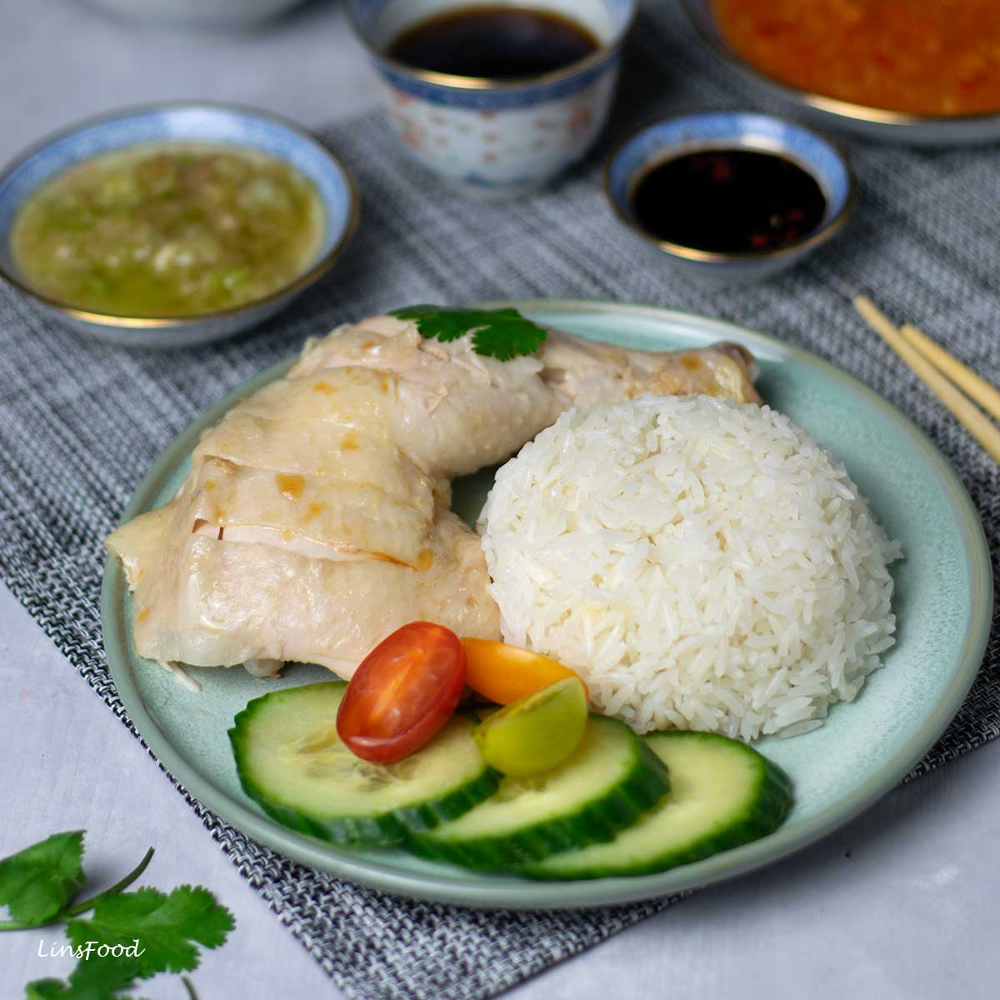

Home
Chicken Rice

Description
Hainanese chicken rice is one of Singapore's most iconic and beloved dishes, known for its comforting simplicity and rich, aromatic flavors. At its heart is poached or roasted chicken, tender and juicy, served atop fragrant rice cooked in chicken fat, garlic, and ginger. The dish is typically accompanied by a trio of dipping sauces: a fiery red chili sauce, a thick dark soy sauce, and a zesty ginger-garlic paste. A light, clear chicken broth often comes on the side, completing the meal. Though it looks humble, every element—from the perfectly cooked rice to the flavorful condiments—requires skill and care, making chicken rice a dish that's both homely and deeply satisfying.
Ingredients
- 1 whole chicken
- Salt
- Slices of ginger
- Spring onions
- Water
- Jasmine Rice
- Garlic
- Chicken broth
Steps
- Clean a whole chicken, removing excess fat (save it for the rice).
- Rub the chicken with salt to exfoliate the skin, then rinse clean.
- Stuff the cavity with a few slices of ginger and spring onions.
- Submerge the chicken in a pot of boiling water. Lower to a gentle simmer and poach for 35 to 45 minutes, depending on the size.
- Once cooked, immediately transfer the chicken into an ice water bath to stop the cooking and create smooth, firm skin.
- In a pan or rice cooker, heat chicken fat (or neutral oil).
- Sauté minced garlic and sliced ginger until fragrant.
- Add rinsed jasmine rice and stir to coat the grains evenly.
- Transfer the rice to a rice cooker, then add chicken broth (from the poaching liquid) and a pinch of salt.